A game with rules for every phase
Without financial resources a new venture cannot exploit its business opportunity, however good the idea is. So entrepreneurs are always looking for financial support, and the sources of funds can feel like a labyrinth. Being afraid of not getting funded is a poor way to start. What helps is knowing that entrepreneurs and investors have specific requirements in each phase of the entrepreneurial process, and that each phase has its own rules.
The lecture compares this to a goose game. Some steps are easy and some speed you up. Others take extra effort. A wrong step can send you back or cost you a turn, and if you move too slowly, others catch up with you.

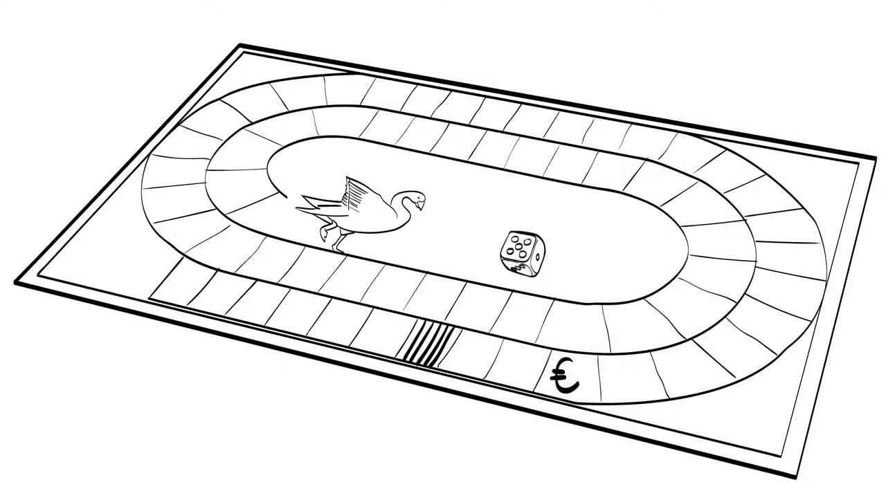
Investors check different requirements at each step, and their red flags matter for your decisions if you want their money. To judge whether an idea can grow, they look at you, at your team and at revenue trends.

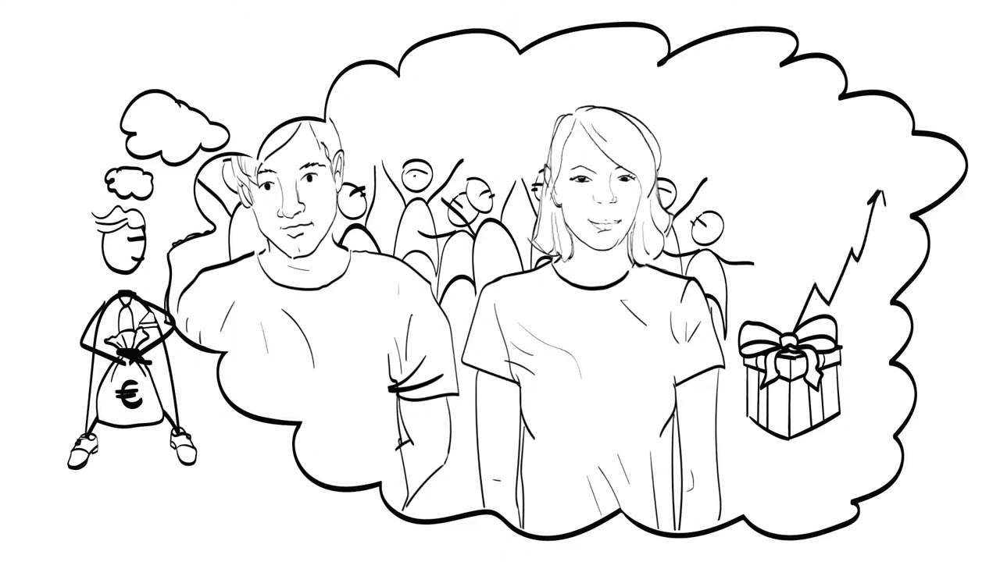
Two startups in two different phases
Two companies from Wageningen run through the lecture as examples. N-CHROMA is the startup of Constantinos Patinios, an MSc student at Wageningen University. It is brand new, and it wants to replace the synthetic colours used in products made for people with a cheap, healthy and sustainable alternative.
NSURE is further along. Its technology monitors genetic activity in plants. Theo Aanhane, the CEO, needs new investors to come on board so the company can scale and use the technology to its full potential.

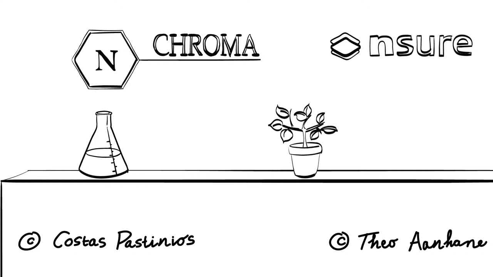
The two are in different phases, so their financial requirements differ, and so do the people willing to fund them. The lecture uses them to show what investors want in each phase.
Idea: grants and a proof of principle
The journey begins with the idea. It is a delicate phase. Funders look mainly at the owner of the idea, which is you, at the market needs, and at how much investment the project needs.

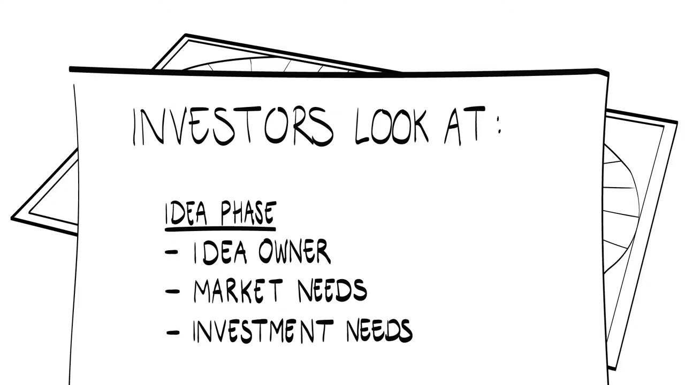
Money at this stage comes as grants. They are given by public institutions, the European Commission for example, or by the university, where ideas are often generated and stimulated. N-CHROMA got its first money from the university.
These funds pay for a proof of principle: you demonstrate, in a limited fashion, that your approach will work when applied in real life. Once you have it, you write a sound feasibility plan and then a concrete business plan. The business plan describes your product, process or technology, your team, a marketing plan, the organisation of the business, the risks, and the first financial projections.

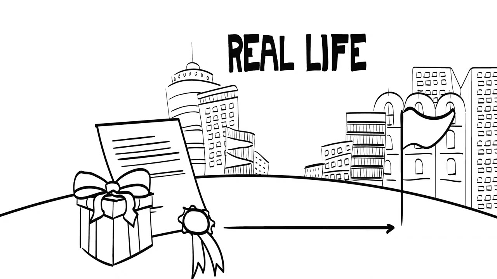
Proposition: family, friends and first numbers
With those documents in hand you enter the proposition phase. The idea is now proven and concrete. Funders care most about the team, about whether there are customers, and about the amount of investment needed.

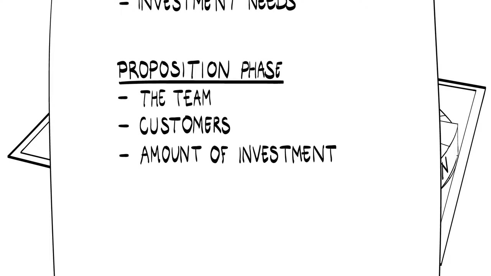
This is typically where family and friends help. Their investment plays a large and often unrecognised part. If you borrow from relatives or friends, do it with the same formality as a bank loan or a venture capital investment. Asking them for money can be scary. If you explain your vision and clearly disclose the risks, they will understand why you ask.

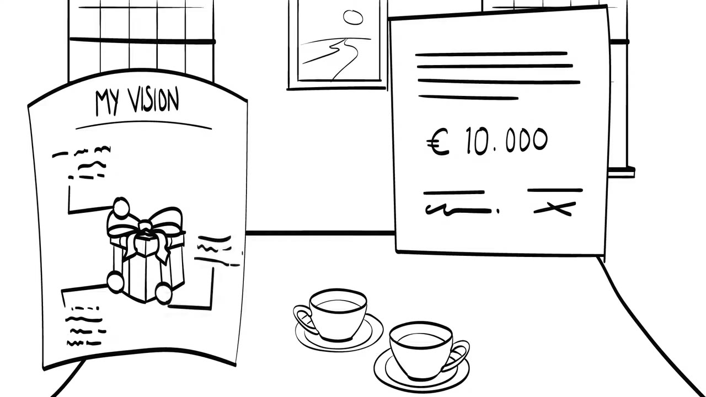
The proposition phase is also when you start defining measurable outcomes that show how the business is performing. Key performance indicators, KPIs, are the numbers that track these quantifiable results over time. They let you optimise each step, and they let investors see whether to invest or not. KPIs feed the proof of concept, which demonstrates the feasibility of your idea.
Business incubators are useful here. They help you develop your network and get access to capital from other investors.

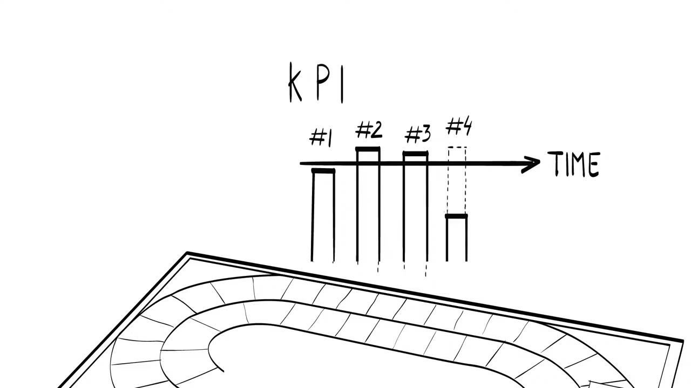

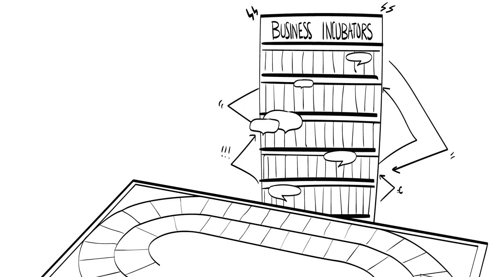
Prototype: a revenue model
Now you are strong enough for the prototype phase. What attracts financial investors here is your organisation as a whole, its sales, and the capital needed. This phase is known as pre-seed funding or early stage venturing.
Investors want to see a plan for profit and losses, and they want to know that your idea has a market. You need to produce a revenue model. When the prototype has been tested, validated and demonstrated, you can finish developing the technology and make it fully operational.

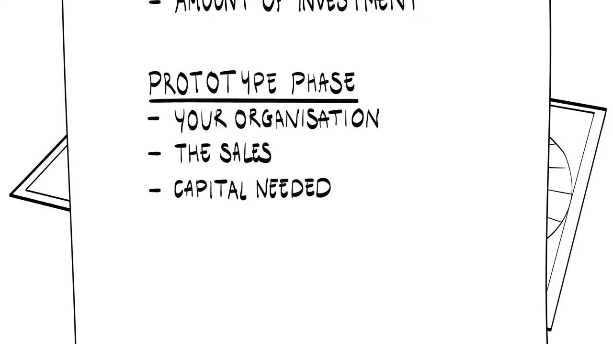

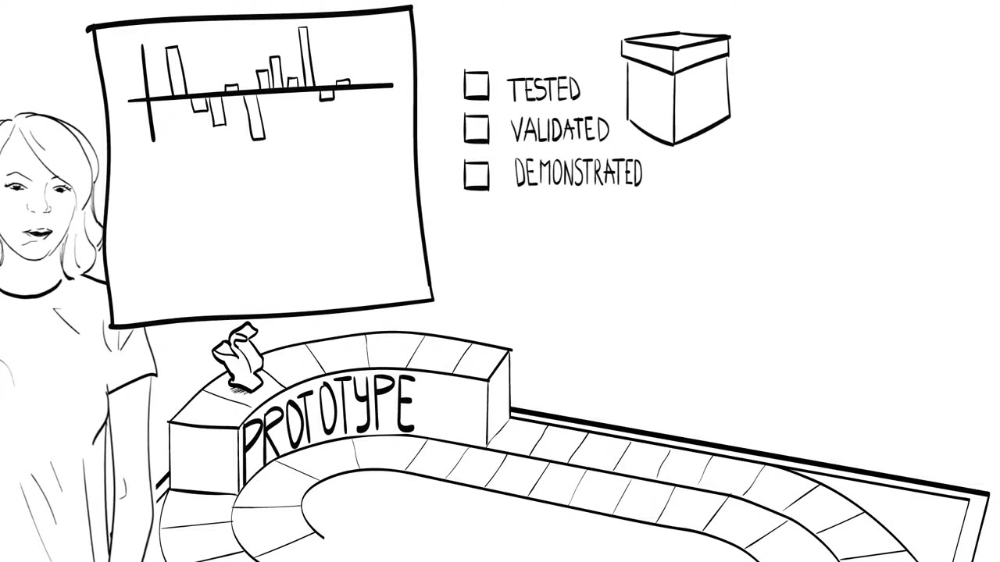
Scale-up: forecasts, liquidity and exits
The last step is the scale-up phase, also called the seed funding stage or second stage venturing. You are expected to present clear forecasts for your revenues, to keep liquidity, and to discuss exit and profit strategies. The costs are mainly production costs. These are the questions Theo Aanhane of NSURE faces with his current investors.

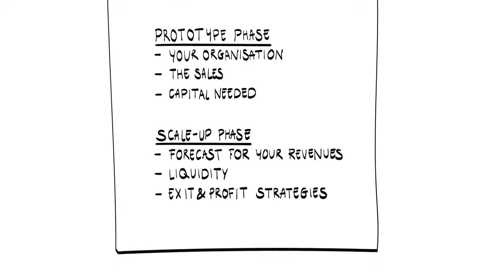
Equity or debt
In the last two phases, prototype and scale-up, you deal with the two main sources of funds: equity and debt. Equity is connected to venture capital. Debt is connected to banks.
Venture capital
Venture capital is financing from companies or individuals who invest in young businesses in exchange for an ownership share. Once you enter this world with your startup, a new game with new rules begins.
Venture capitalists usually do not want to take part in the initial financing of a business. They prefer companies that are already profitable, have a competitive advantage, have proven demand for the product, or own a very special and protectable idea. They often take a hands-on approach and require representation on the board of directors. In return they give guidance and business advice. They also expect substantial risk-adjusted returns: if the risk is low, the matching return can be lower too.

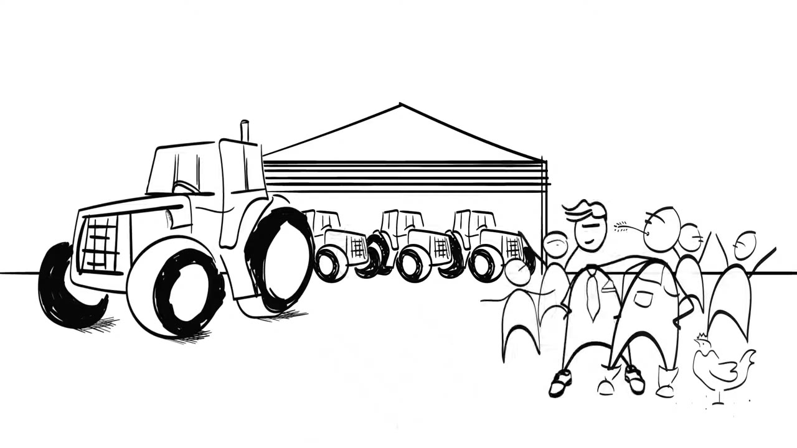
Banks
Banks provide most of the capital that businesses borrow. They normally hold no equity in the business, so they require the capital to be repaid and they charge interest. That makes them a hard fit for a startup. A startup has little proven capability to generate sales, profits and cash to pay off debts. Without adequate existing capital and good management, it offers a bank little real loan security.

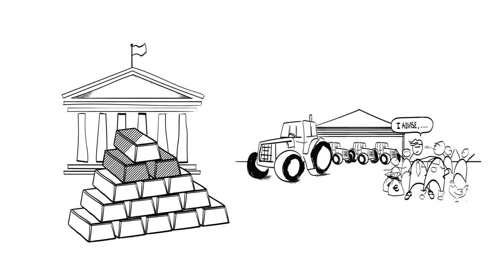
How to play the game
The lecture closes with advice for the goose game. Decide consciously which type of funding to attract at which stage, and treat funding as a flow, not a batch process.
Start by understanding your business and who your customers are. Go out and meet the people in your network. Family, friends and acquaintances are the first to help. After that, seek investors who have experience in the field you work in. And believe in yourself and your idea.

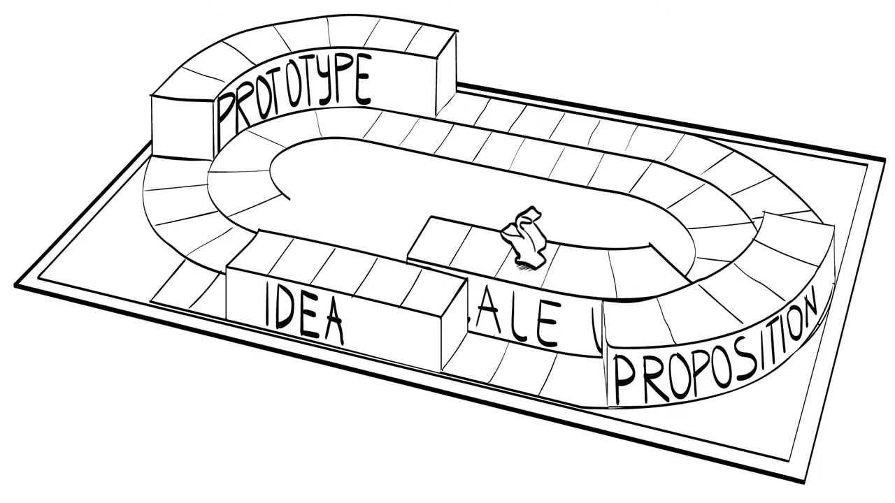
Terms to know
- Proof of principle
- A demonstration, in a limited fashion, that your approach will work when applied in real life. Grants in the idea phase pay for it.
- Key performance indicators (KPIs)
- The numbers that track quantifiable results over time. They let you optimise each step and let investors decide whether to invest.
- Proof of concept
- What demonstrates the feasibility of your idea. KPIs serve it.
- Pre-seed funding
- Funding in the prototype phase, also called early stage venturing. Investors want a plan for profit and losses, evidence of a market, and a revenue model.
- Seed funding
- Funding in the scale-up phase, also called second stage venturing. Investors expect revenue forecasts, liquidity, and exit and profit strategies.
- Venture capital
- Financing from companies or individuals who invest in young businesses in exchange for an ownership share.
- Equity and debt
- The two main sources of funds in the prototype and scale-up phases. Equity comes with venture capital. Debt comes from banks, which want the capital repaid with interest.